01 · 커피숍
커피 마시다가도, 업무 수정은 말로
친구들과의 수다 사이, 잠깐 확인하고 다시 일상으로.
YouTube에서 보기 ↗Process GPT LiteAI 업무 비서 알아보기 →
대화 한 줄로 시작하는 AI 업무 비서 — Process GPT의 엔진을 그대로, 개인과 팀이 바로 쓸 수 있게
광고에서 만난 유애진의 다음 이야기가 궁금하셨나요?
커피 한 잔, 골프 한 라운드, 동료들과의 워크숍. 일상 속 업무 고민을 함께 풀어가는 네 편을 만나보세요.
친구들과의 수다 사이, 잠깐 확인하고 다시 일상으로.
YouTube에서 보기 ↗역할을 나누고, 함께 할 일과 순서대로 할 일을 연결해요.
YouTube에서 보기 ↗유애진은 AI로 제작한 가상 캐릭터입니다. 각색된 에피소드와 제품 데모를 함께 구성했습니다. 고기굽기 편은 기업용 Process GPT, 상담 편은 ‘우리회사 AI 교실’ 서비스를 소개합니다.
채팅으로 시작해, 팀의 업무 흐름까지
Process GPT Lite는 채팅 중심의 AI 업무 비서입니다. 말을 걸면 맥락에 맞게 대화를 이어 가고 문서와 앱을 만듭니다. 반복되는 일은 스킬과 예약 미션으로 맡길 수 있습니다. 결정이 필요한 순간에는 맡은 사람의 홈 화면에 조치 카드가 올라옵니다.
간편하게 사용할 수 있으며, 내부에는 Process GPT의 엔진을 그대로 사용합니다. 에이전트 런타임, 프로세스 엔진, 이음오피스, MCP 허브 위에서 동작하므로, 대화로 만든 프로세스는 Process GPT의 BPMN 프로세스로 저장되고 조직이 커지면 그대로 Process GPT로 이어집니다.
별도 교육이나 모델링 없이, 평소 일하는 방식 그대로 AI와 함께 일합니다.
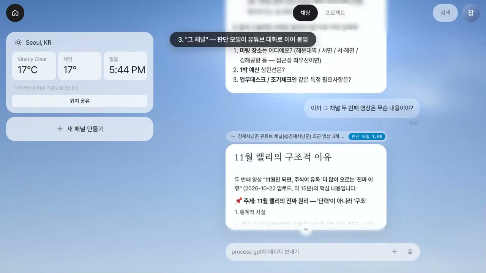
프로젝트를 고르거나 새 대화를 열 필요가 없습니다. 하나의 입력창에 말을 걸면 맥락 라우터가 그 메시지가 어떤 대화와 이어지는지 판단해 알맞은 대화로 연결하고, 새로운 주제라면 새 대화를 엽니다.
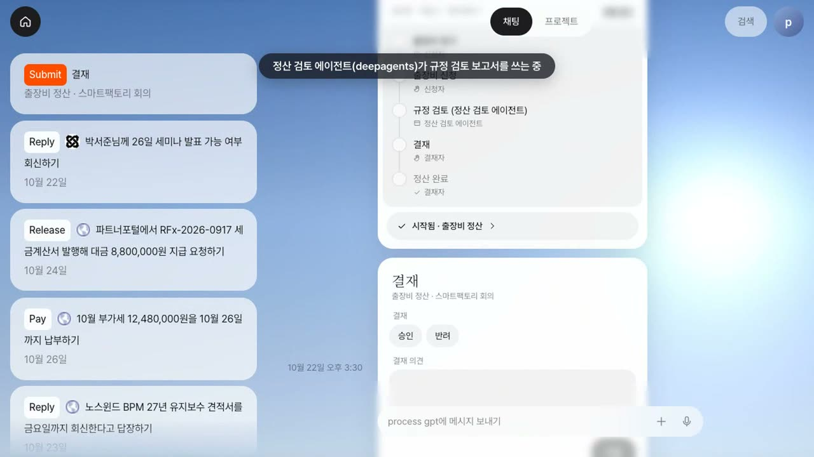
홈 화면에는 지금 내가 조치할 일이 카드로 올라옵니다. 결재·검토·회신처럼 사람의 판단이 필요한 단계는 그 역할을 맡은 담당자에게만 가고, 카드의 버튼을 누르면 바로 처리됩니다.
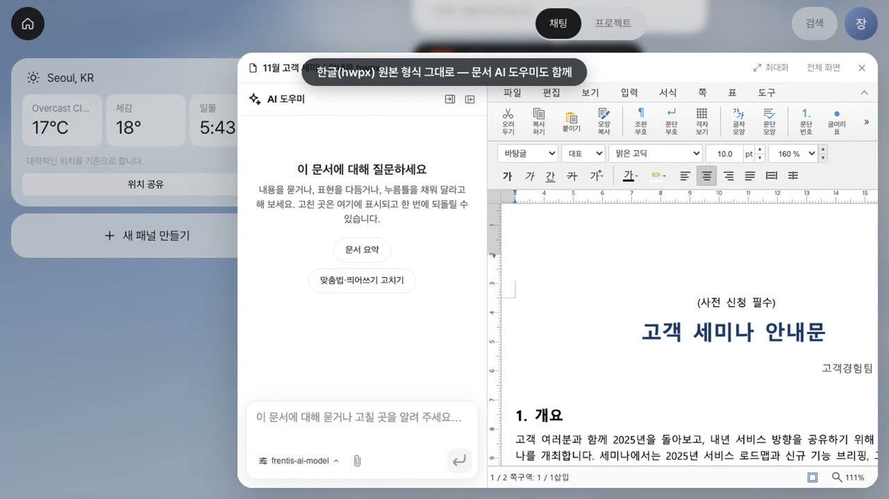
에이전트가 만든 한글·워드·엑셀·파워포인트 문서를 내려받지 않고 이음오피스 편집기로 바로 엽니다. 고쳐서 저장하면 대화의 문서 카드가 편집본으로 바뀝니다.
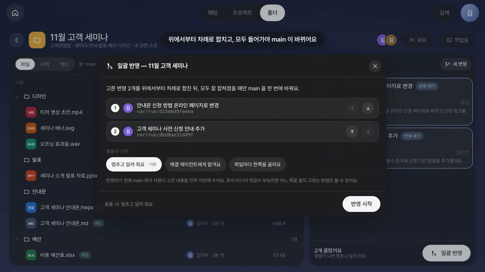
팀의 파일을 드라이브처럼 함께 씁니다. 에이전트는 기준본을 직접 건드리지 않고 변형(브랜치)에서 일하며, 사람은 차이를 확인한 뒤 고른 변형만 기준본에 한 번에 반영합니다.
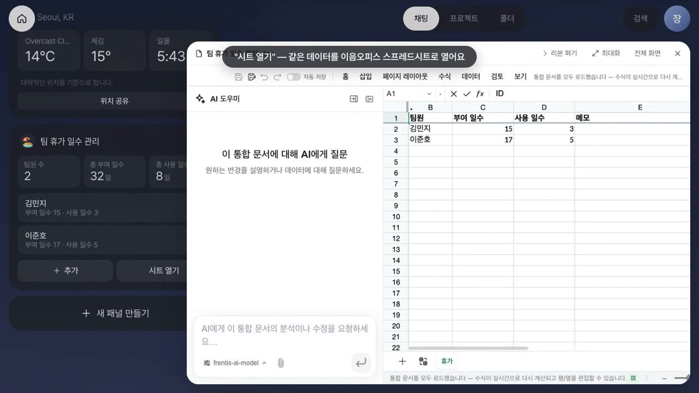
"팀 휴가 일수 관리 패널 만들어줘" 한마디로 입력 화면과 요약을 갖춘 업무 앱이 홈에 생깁니다. 데이터는 공유 폴더의 스프레드시트에 저장되므로, 시트로 열거나 패널에서 수정할 때 모두 같은 원본을 사용합니다.
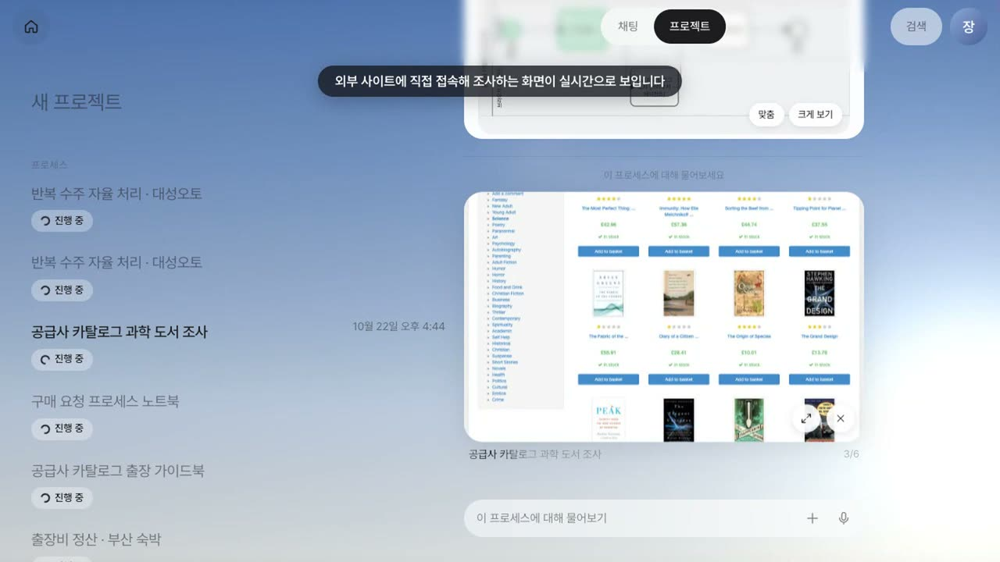
Lite만을 위한 별도 엔진이 아닙니다. 에이전트 런타임, 프로세스 엔진, 이음오피스, MCP 허브까지 Process GPT의 엔진 위에서 동작합니다. 대화로 만든 프로세스는 Process GPT의 BPMN 프로세스로 저장됩니다.
작게 시작해 바로 효과를 보고, 쌓인 업무 방식은 조직의 자산으로 남깁니다.
모든 화면은 실제로 동작하는 제품에서 캡처했습니다. 주제별 영상으로도 확인할 수 있습니다.
01 · 대화와 홈
대화는 맥락을 잃지 않고, 홈은 지금 조치할 일을 먼저 보여 줍니다.
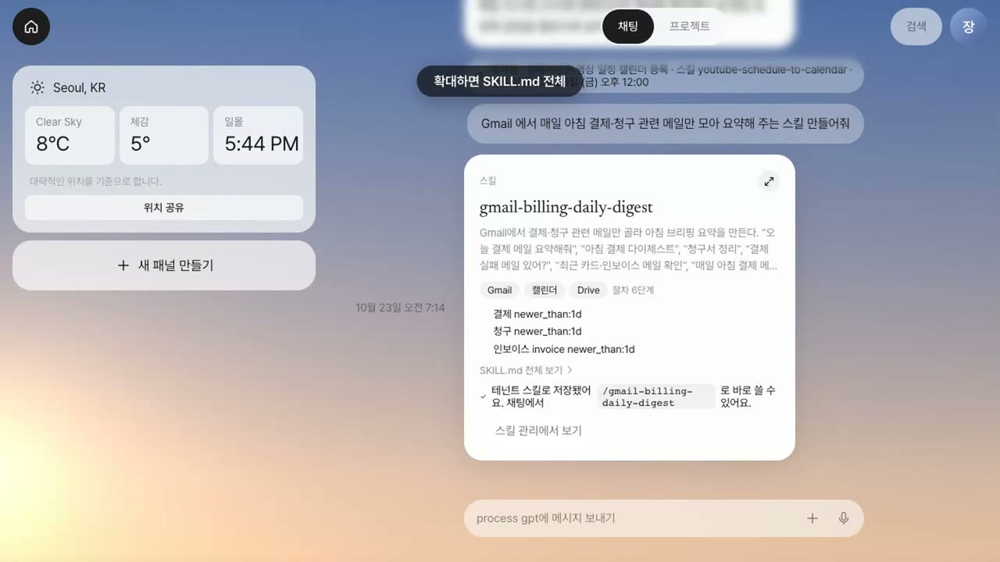
02 · 업무 자동화
한 사람의 반복 업무는 스킬과 예약 미션으로, 여러 사람·에이전트가 함께 수행하는 업무는 프로세스로 만듭니다.
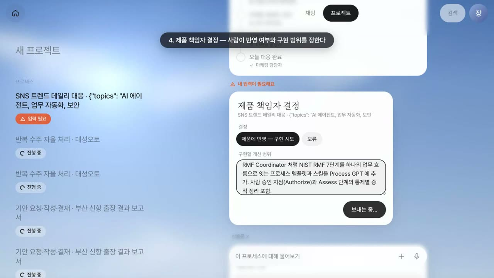
03 · 실전 시나리오
매일 SNS를 살펴 우리 제품에 접목할 만한 이슈만 사람에게 올리고, 결정부터 구현·마케팅 초안까지 이어지는 프로세스입니다.
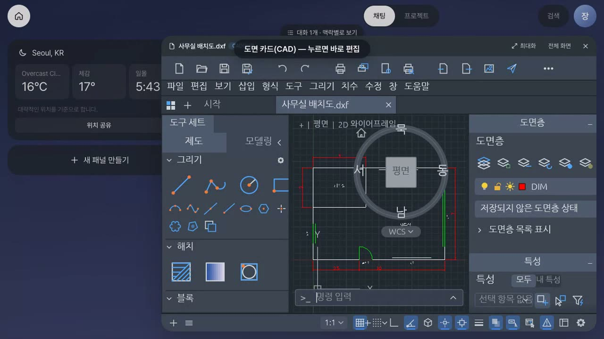
04 · 문서와 제작 앱
문서뿐 아니라 도면·벡터 그림·레이어 이미지·소리·영상까지, 에이전트는 MCP로 만들고 사람은 웹 앱으로 바로 고칩니다.
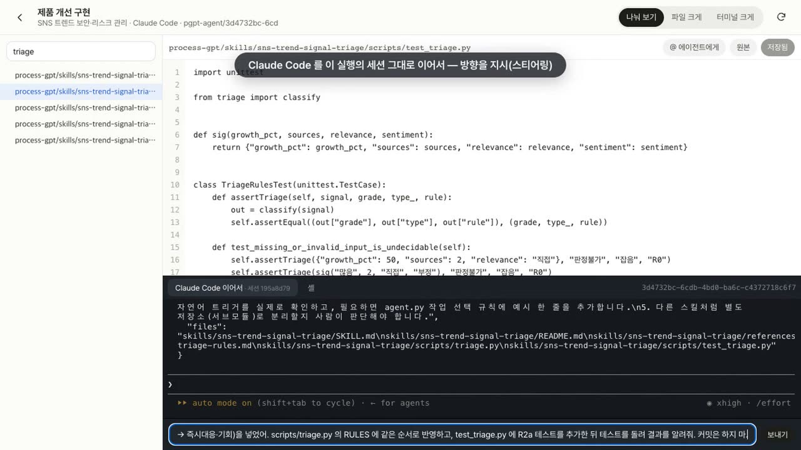
05 · 에이전트 작업실
결과만 받아 보는 데서 끝나지 않습니다. 에이전트의 작업 폴더를 열어 산출물을 보고, 직접 고치고, 실행 중인 에이전트에게 방향을 지시합니다.
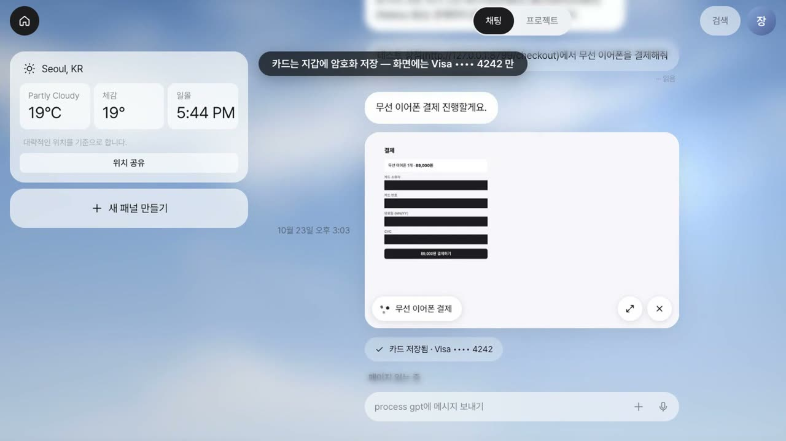
06 · 보안
브라우저 에이전트가 로그인·결제·인증 코드를 입력해야 할 때 작업을 멈추고, 시스템이 사용자에게서 값을 대신 받아 처리합니다.
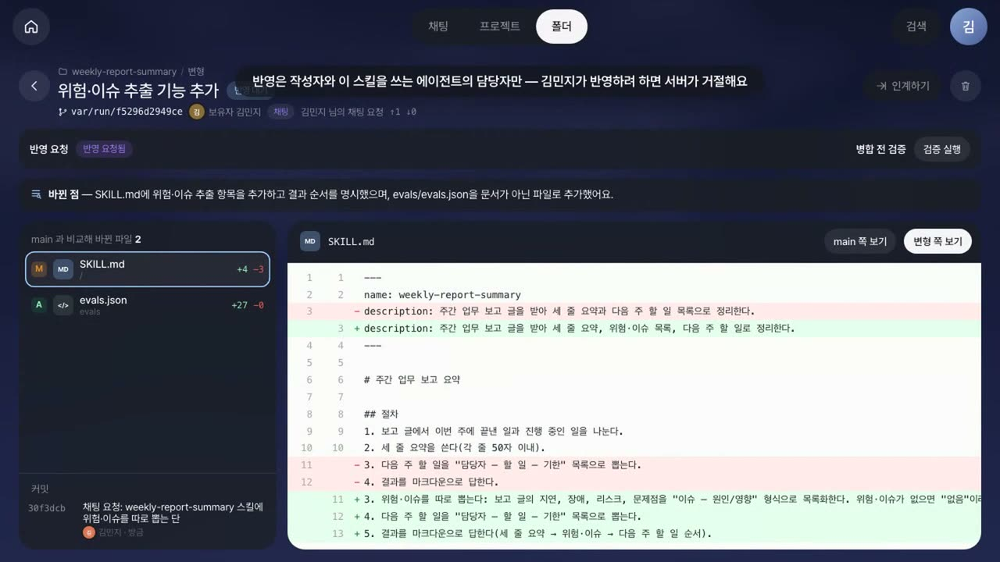
07 · 팀 협업
사람과 에이전트가 같은 파일 공간에서 일하고, 잘 만든 스킬은 검토를 거쳐 팀 전체가 함께 사용합니다.
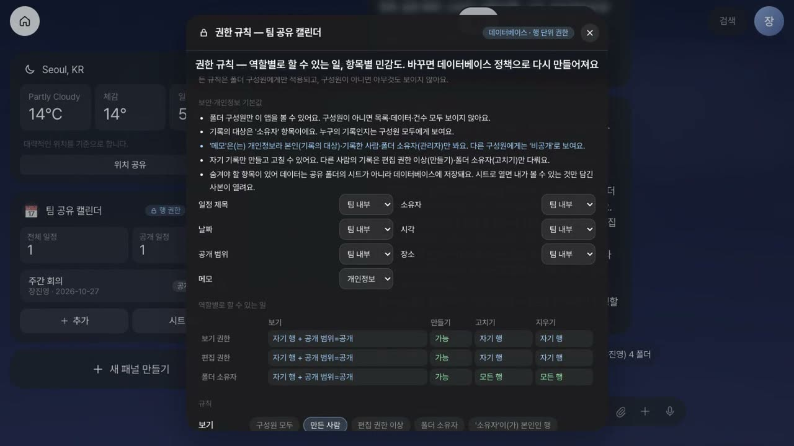
08 · 패널 앱
작은 업무 앱이 필요할 때마다 개발을 기다릴 필요가 없습니다. 수량이 늘고 줄어드는 업무와 여러 사람이 함께 쓰는 데이터까지 안전하게 다룹니다.
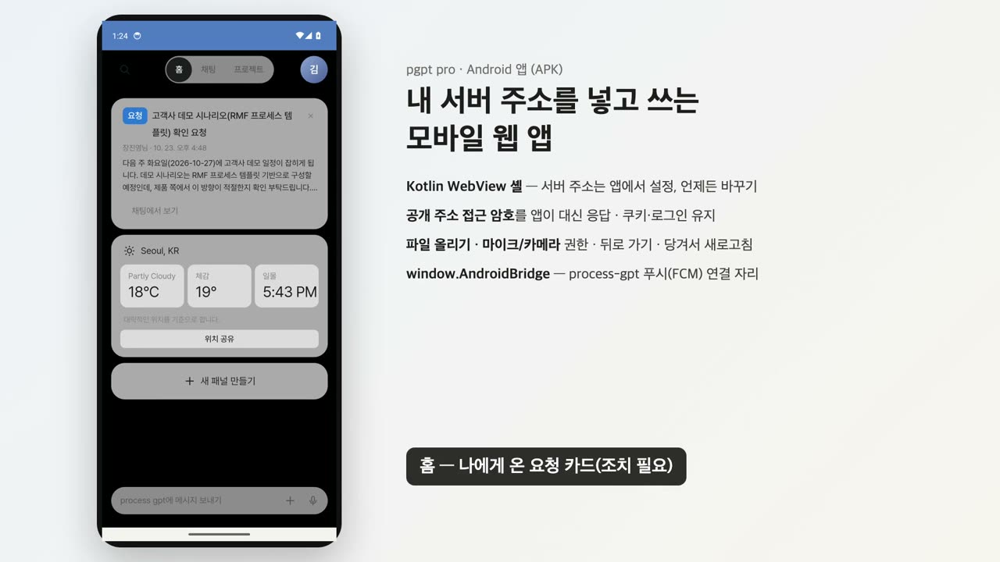
09 · 어디서나
사무실 밖에서도 같은 화면으로 이어서 일합니다.
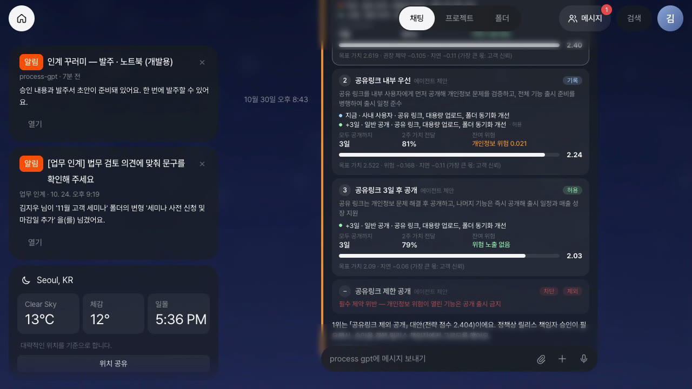
10 · Agentic BPM (PoC)
비서와 에이전트가 메일 발송·결제·구매·출시처럼 결과가 남는 일을 하기 전에, 회사 정책이 자동 실행·실행 후 기록·사전 승인·차단 가운데 하나로 판단하고 결정 원장에 남깁니다. 판단은 규칙으로만 하고, AI 모델이 승인 여부를 정하지 않습니다.
기능마다 1~3분 분량의 시연 영상입니다. 썸네일을 누르면 재생됩니다.
hark pro에서 출발해, 앱을 넘나드는 하나의 도우미(메일 한 통 → 평면도·제안서·견적서), Claude Code·Codex, 폴더와 팀 공유, 프로세스 마이닝으로 자라는 프로세스까지 8분에 봅니다.
고객 메일만으로 캐드 평면도·한글 제안서·엑셀 견적서 초안이 먼저 만들어지고, 도면을 가리켜 포토크래프트로 색을 맞추고, 테이블·벽·글자가 빠짐없이 남았는지 스스로 검수한 뒤 한글 문서에 다시 넣습니다.
산출물을 팀원에게 바로 공유하고, 받은 사람은 자기 사본이나 "이어서 작업"으로 바로 이어 일합니다. @멘션 추천과 팀 메신저까지.
자동으로 나뉜 대화 목록에서 하나를 골라 그 대화만 보고 이어 묻고, 대화마다 쌓인 산출물을 바로 엽니다.
메일 → 평면도·제안서·견적서 → 공유·회신이 반복되자 흐름을 찾아 추천하고, 정식 등록 후 다음 메일부터 프로세스가 알아서 돌아가고, 재무 담당은 산출물을 이음오피스·캐드크래프트로 바로 열어 검토합니다.
지난 메일(본문과 첨부)과 채팅 인계 기록을 바탕으로 일 · 다음 일 · 배운 조건 · 사건 · 역할을 Ontological DB에 그립니다. 매주 월요일 아침에 하는 주간 공정 보고는 메일에서 찾은 「매주 월 9시」 타이머 사건이 됩니다.
「자동」으로 올린 프로세스는 「견적만 다시」 메일이 오면 견적서 작성부터 실행됩니다. 업무 에이전트가 양식에 맞춰 견적서를 만듭니다. 재무 검토는 에이전트가 초안을 채운 상태로 박서연의 홈에 도착합니다.
더 이상 쓰지 않는 경로는 근거가 되는 숫자와 함께 정리하고, 재무 검토는 다음 달 1일부터 고정합니다. 결정 내용은 결정 원장과 Ontological 이력에 남습니다.
영업 세 사람이 서로 다른 말로 요청하던 직인 넣기를 영업 루틴으로 모읍니다. 공유한 방법마다 걸린 시간을 비교해 가장 빠른 방법을 그 일의 스킬로 만듭니다.
조직이 프로세스마다 관찰 · 제안 · 자동을 정합니다. 제안으로 정하면 메일 · 채팅 요청을 진행할지 묻습니다. 메일로 요청한 정기 업무는 예약하고, 회사 타이머가 울리면 정해진 단계를 따릅니다.
로그인부터 홈·채팅·프로세스 실행까지, 하루 업무의 흐름을 한 번에 봅니다.
판단 모델 → logprob → JSON 순으로 메시지가 이어질 대화를 고릅니다.
길게 누르기·우클릭으로 좋아요, 복사, 텍스트 선택, 답장을 합니다.
결과물 뒤에 늘 시키던 일을 배워 「지난번처럼 …드릴까요?」라고 먼저 묻습니다.
채팅으로 만든 프로세스를 BPMN으로 저장하고, 브라우저 미션 단계까지 실행합니다.
Google·YouTube 등을 연결하고 스킬을 예약 실행합니다. Claude Code 실행과 모바일 화면도 함께 봅니다.
벤치마킹 → Claude Code 제품 개선 구현 → 마케팅 초안까지 이어지는 프로세스입니다.
사내 메일은 자동, 외부 메일은 기록·회수, 개인정보는 책임자 승인, 대량 반출은 차단합니다.
승인자가 보기 전에 선택지·추가 승인·남은 리드타임과 발주서 초안을 준비합니다.
정책에 막힌 출시를 대안으로 다시 짜고 전략맵의 우선순위로 순위를 매깁니다.
결정 원장 30일을 모아 보고, 완화·강화·대안 경로 제안을 적용합니다.
산출물을 보고, 코드를 넣고, Claude Code에게 방향을 지시합니다.
에이전트 작업에 필요한 비밀번호·카드를 대신 받아 봉투 암호화로 보관합니다.
일하는 브라우저의 실시간 화면을 입력창 옆 원으로 띄우고, 누르면 가운데 카드로 커져 지금 하는 일을 보여 줍니다.
로그인 중 이메일로 온 인증 코드를 메일함에서 찾아 바로 넣습니다. 묻는 카드는 그대로 두고, 먼저 온 쪽이 쓰입니다.
내 서버 주소를 넣고 쓰는 모바일 앱입니다.
메일 한 통으로 PSpice 회로 검토, STEP·IGES 3D, 2D 도면, 제안서, 견적서 초안을 준비합니다. 값은 도구에서 잰 것입니다.
이벤트 소싱 ERP와 연결한 예시입니다. 파일을 올리면 묻고, 수락하면 MCP로 처리하고, 말로 취소하면 서버가 보상합니다. 공개 설치본에는 아직 없습니다.
내년 분기와 매출, 발주·가격·납기를 바꾸면 어떻게 되는지 묻습니다. 숫자는 ERP 화면과 같은 모델이 계산합니다. 공개 설치본에는 아직 없습니다.
에이전트는 MCP로 도면을 그리고, 사람은 웹 CADCraft로 바로 고칩니다.
에이전트가 만든 벡터 그림을 웹 VectorCraft로 다듬습니다.
레이어가 살아 있는 이미지를 웹 PhotoCraft로 편집합니다.
에이전트가 만든 소리를 웹 SoundCraft로 고칩니다.
에이전트가 편집한 영상을 웹 FilmCraft로 이어서 편집합니다.
대화로 고치면 열린 앱에 바로 반영됩니다. 다이얼로 입력창을 불러옵니다.
일을 시키면 관계있는 대화 맥락이 칩으로 붙고, 팀원의 맥락은 요청하기 → 홈 카드에서 허락받아 다시 답합니다. 이미 한 요청이면 에이전트 대신 그 답을 보여 줍니다.
폴더에서 역할을 정하고 Claude Code를 팀 세션으로 실행합니다. PO에게 온 요구사항 질문의 답을 몹 회의에서 함께 정합니다. 합의한 답은 결정 화면에 채워지고, 아키텍트는 도메인 설계 수정을 요청한 뒤 승인합니다.
볼트 계획은 몹 구축 회의에서 정합니다. 이후 개발자가 권한 카드를 받아 공유 쉘에서 응답하고, 코딩 중 바꿀 점을 지시합니다. 지시한 내용은 코드 계획과 생성된 앱에 반영되고, QA가 빌드·테스트를 승인합니다.
AI-DLC 저장소를 공유 폴더로 연결하면 홈에서 작업 현황·사람 대기·볼트 보드·품질 패널을 확인합니다. AI-DLC가 답변을 받고 승인을 기다리는 동안 패널이 자동으로 갱신됩니다.
질문마다 팀원들이 각자 답을 고릅니다. 다른 사람의 선택은 내가 고른 뒤에 보입니다. 같은 답이 모이면 합의가 되고, 답이 갈리면 결정권자가 이유와 근거를 보고 정한 뒤 한 번에 보냅니다.
승인 창의 검토 지적도 팀이 함께 판단합니다. 원본 문서에서 지적한 절을 열어 확인합니다. 고칠 것과 받아들일 것을 하나의 결정으로 묶어 세션에 보냅니다.
개발자는 코드 계획 승인 요청을 받으면 계획 문서 원본을 열어 읽고 승인합니다. 팀 리드는 볼트 보드에서 의도 → 유닛 → 볼트를 확인합니다. 실행 중인 유닛을 누르면 해당 유닛을 만드는 Claude Code 화면이 열리고, 시험에서 되돌아온 볼트도 보입니다.
팀 리드가 대화에 버그를 적으면 범위와 건드릴 유닛, 그렇게 본 까닭을 담은 계획안 카드가 옵니다. 「지금 시작」을 누르고 폴더를 믿는지 답하면, 팀 세션이 해당 범위로 시작하고 볼트 줄에 볼트가 섭니다.
PO가 접수한 기능은 유닛마다 볼트로 나뉘어 줄 끝에 섭니다. 다른 볼트를 기다리는 볼트는 혼자 옮길 수 없어 함께 옮깁니다. QA가 보안 사유로 세션을 바로 멈추고, 팀 리드가 까닭을 보고 폐기하면 줄 앞이 빕니다.
공유된 만큼만 팀원이 AI 와 하는 일을 요약해 보고, 맥락마다 누가 어디까지 볼지 미리 보며 정합니다.
급여 같은 주제가 보이면 같은 팀의 원문 요청도 정책이 주인에게 묻게 하고, 모든 참고 허락은 제목을 가린 채 결정 원장에 남습니다.
회의 중 말을 듣고 도우미가 견적서·평면도·진행 상황을 띄우고, 부탁은 에이전트 작업으로, 회의록은 대화방에 저절로 남습니다.
에이전트는 변형에서 일하고, 사람은 변형을 선택해 일괄 반영합니다.
내 스킬을 전사에 공유하고, 동료의 개선 제안을 검토·검증한 뒤 반영합니다.
휴가·리드 관리 같은 업무 앱을 말로 만들고, 데이터는 스프레드시트에 둡니다.
기록을 쌓고 다시 계산하는 휴가 관리 앱과 앱을 만들 때부터 적용되는 개인정보 보호를 소개합니다.
앱 전용 데이터베이스와 RLS로 "누가 무엇을 고칠 수 있는지"를 지킵니다.
두 제품은 같은 엔진을 씁니다. Process GPT가 사람·AI·기존 시스템을 End-to-End 프로세스로 연결해 조직 전체의 리드타임을 줄이는 플랫폼이라면, Process GPT Lite는 그 엔진을 채팅 하나로 바로 쓰도록 만든 개인·팀용 업무 비서입니다. Lite로 작게 시작하고, 업무가 부서를 넘나들기 시작하면 Process GPT로 넓힙니다.
| 구분 | Process GPT Lite | Process GPT |
|---|---|---|
| 제품 성격 | AI 업무 비서 — 채팅 중심의 개인·팀 업무 도구 | Agentic BPM 플랫폼 — 조직 전체의 End-to-End 프로세스 실행 |
| 주요 사용자 | 개인과 소규모 팀, 중소·중견기업의 현업 | 현업·프로세스 담당자·IT를 아우르는 조직 전체 |
| 시작하는 방법 | 채팅으로 바로 — 모델링 없이 대화·스킬·예약 미션부터 | 프로세스 정의와 BPMN 모델링, 규정 문서 역설계에서 출발 |
| 업무 단위 | 대화, 스킬, 예약 미션, 패널 앱 — 필요할 때 프로세스로 | End-to-End 프로세스와 인스턴스 |
| 주요 화면 | 채팅 · 홈 패널 · 공유 폴더 · 패널 앱 · Android 앱 | 프로세스 모델러, 업무 목록·인스턴스, 분석·관측 화면 |
| 통제와 거버넌스 | 폴더 구성원 권한, 역할 담당자 알림, 스킬 검토·병합, 행 단위 보안 | 조직 단위 거버넌스, DMN 규칙, 실행 고착화, 리드타임 분석 |
| 시스템 연동 | Google · Slack · GitHub · Notion · YouTube 커넥터와 MCP | MCP 허브, A2A, 기업 내부 시스템 연동 |
| 구축 형태 | 가볍게 도입 — 웹 브라우저와 Android 앱으로 사용 | 온프레미스 · Kubernetes 기반의 엔터프라이즈 구축 |
| 엔진 | Process GPT 엔진 (에이전트 런타임 · 프로세스 엔진 · 이음오피스 · MCP 허브) | 동일 |
| 확장 | Lite에서 만든 프로세스는 Process GPT의 BPMN 프로세스 — 그대로 이어서 사용 | 팀 단위 업무를 조직 전체의 프로세스로 확장 |
INSTALL
Docker가 있는 PC 한 대에 명령 세 줄로 설치합니다. 데이터베이스, 로그인, AI 에이전트, 문서 편집기까지 한 번에 실행되고, 새 릴리스가 나오면 그 릴리스의 명령으로 업그레이드합니다.
v0.2.0 릴리스에 고정된 설치 스크립트를 내려받아 확인값(SHA-256)을 검사한 뒤 실행하세요. 확인값이 맞지 않으면 실행하지 마세요. 설치 중에 LLM 주소·API 키·모델 이름과 첫 관리자 이메일을 묻습니다. 저장소를 직접 받아도 됩니다:
git clone https://github.com/uengine-oss/process-gpt-lite.git && cd process-gpt-lite/install && ./install.sh
Docker Desktop(또는 Docker Engine)과 OpenAI 호환 LLM API 키를 준비합니다.
위 명령을 실행합니다. 처음에는 이미지 빌드에 20~40분이 걸리고, 그다음부터는 1~2분이면 시작합니다.
http://localhost:18080에서 관리자 이메일을 넣고, http://localhost:18025 메일함에 온 6자리 코드를 입력합니다.
| 항목 | 최소 | 권장 |
|---|---|---|
| Docker | Docker Desktop 4.x 또는 Docker Engine 24+ (Compose v2) | - |
| Docker에 할당한 메모리 | 6GB (실행 중 약 1.5GB 사용) | 8GB 이상 (첫 빌드) |
| CPU | 4코어 | 8코어 |
| 디스크 | 20GB (이미지 약 11GB) | 30GB |
| LLM | OpenAI 호환 API 주소·키·모델 이름 (OpenAI, 사내 LLM, vLLM 등) | |
| 프로필 | 포함 서비스 | 할 수 있는 일 |
|---|---|---|
| lite (기본) | 웹·서버, Supabase(PostgreSQL·인증·API·스토리지), 메일함, Deep Agents + 샌드박스, 문서 생성(office-mcp), 이음오피스 편집기 | 채팅으로 일 맡기기, 에이전트 작업, 문서 생성·편집, 공유 폴더, 패널 앱, 보관함, 브라우저 에이전트 |
| full (미리보기) | lite + 프로세스 엔진(completion·polling) + MCP 허브 | BPM 프로세스 시작·진행, MCP 서버 관리 |
./install.sh --profile full로 활성화합니다.
.env에 주소를 넣어 연결합니다..env는 설치할 때 만들어지며(권한 0600) 비밀 키는 자동으로 생성됩니다. 업그레이드해도 그대로 유지됩니다.
.env의 PUBLIC_URL을 이 PC의 주소로, LITE_BIND=0.0.0.0으로 바꾸고 SMTP를 설정한 뒤 ./install.sh를 다시 실행합니다.| 증상 | 해결 |
|---|---|
| 포트 18080을 다른 프로그램이 사용 중 | ./install.sh --port 28080 |
| 로그인 코드가 오지 않음 | http://localhost:18025 메일함 확인, docker compose logs auth |
| 채팅에 답이 없음 | .env의 LLM 주소·키·모델 확인 후 ./install.sh, docker compose logs deepagents |
| 에이전트 작업이 멈춤 | Linux는 사용자를 docker 그룹에 추가, docker ps에 deepagent-sandbox-*가 있는지 확인 |
| 첫 빌드가 메모리 부족으로 실패 | Docker 메모리를 8GB 이상으로 늘리고 다시 실행 |
| Windows | WSL2 안에 Docker Engine을 설치해 쓰는 구성을 권장합니다 |
우리 회사 일로 배우고, 회사에서 직접 써 보세요. 실제 업무 하나를 가져와 Process GPT Lite로 실습하고, 약정한 회사 환경에 초기 설치까지 교육에 포함됩니다.
STEP 1 · 교육
첫 대화와 맥락 → 이음오피스 한글·엑셀 → Craft 앱 → 공동 편집 → 패널 앱 → 공유 폴더 → 스킬·예약 미션 → 메일에서 초안 → 프로세스 마이닝 → 에이전트 작업실 → 내 업무 캡스톤.
STEP 2 · 구축
약정한 서버 1대에 Docker Compose로 설치하고, 관리자 계정 등 초기 설정과 회사가 쓰는 LLM 연결까지 함께 합니다. 실습에서 만든 스킬과 앱을 그대로 옮겨 씁니다. LLM·서버 비용과 맞춤 연동은 별도로 미리 안내합니다.
STEP 3 · 정착
컨설턴트가 매월·상시 온라인으로 진단, 프로세스 혁신, 교육·변화관리를 직원·팀·경영진에 맞춰 지원합니다. 월 200만 원부터 1,000만 원까지 세 가지 구성(VAT 별도, 협의).
전환 프로그램: 진단 → 병목 → 에이전트·자동화 → 프로세스 혁신 → 교육 → 변화관리 흐름 보기 →
대화 한 줄로 시작해 보세요
Process GPT Lite로 오늘의 업무부터 AI에게 맡기고, 팀의 업무 흐름으로 넓혀 가세요.
도입 상담과 시연 요청을 기다립니다.